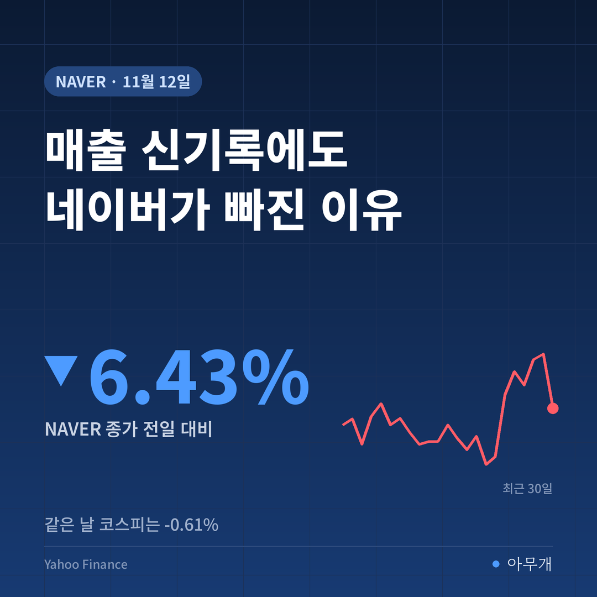
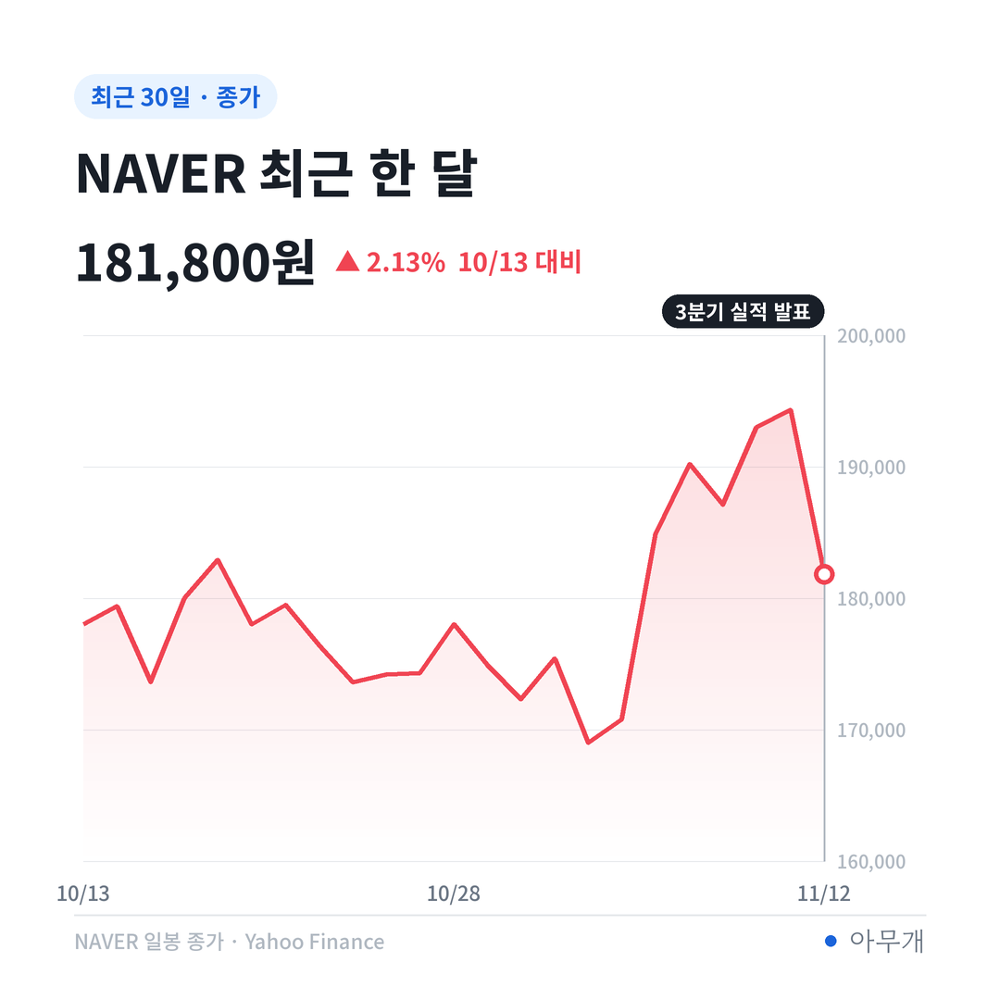
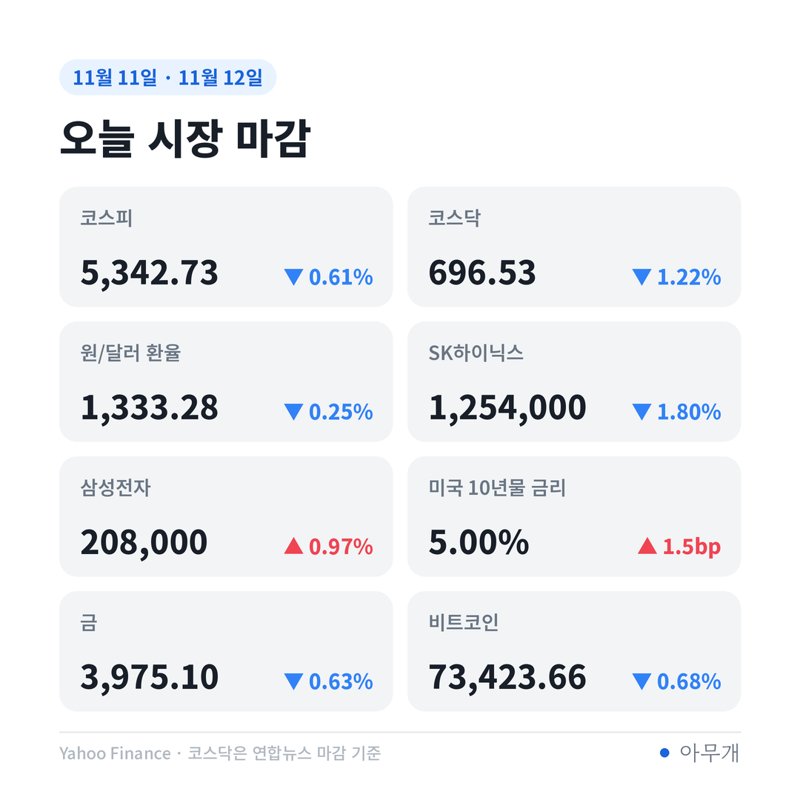
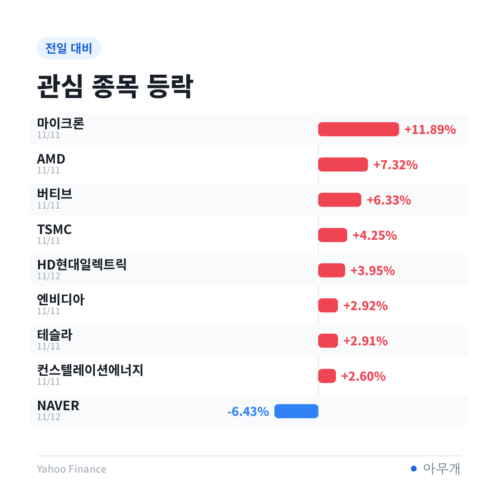

📷 사진 1 자리
실적표에 같이 적힌 두 숫자
12일 아침 네이버가 내놓은 3분기 실적은 한 장 안에 좋은 숫자와 나쁜 숫자가 함께 들어 있었어요. 매출은 6개 분기 연속으로 최고 기록을 새로 썼고, 직전 최고였던 2분기(3조3,888억원)보다도 약 2.5% 많았어요[1]. 그런데 같은 표에서 영업이익은 20% 넘게 줄었습니다[1][2].
📷 사진 2 자리
| 항목 | 3분기 | 1년 전 대비 |
|---|---|---|
| 전체 매출 | 3조4,724억원[1] | +10.7%[1] |
| 영업이익 | 4,513억원[2] | -20.9%[2] |
| 네이버 플랫폼(검색·광고·쇼핑) | 1조9,484억원[1] | +7.3%[1] |
| 파이낸셜 플랫폼(네이버페이) | 4,877억원[1] | +14.1%[1] |
| 글로벌 도전(포시마크·왈라팝 등) | 1조364억원[1] | +15.9%[1] |
회사는 이익이 줄어든 이유로 AI 인프라와 콘텐츠 투자를 들었어요[1][2]. 같은 날 미국 AI 추론 기업과 약 2조원 규모의 컴퓨팅 서비스 공급 계약도 발표했죠[1][3]. 엔비디아·브룩필드와 함께하는 'AI 팩토리' 사업의 첫 계약입니다.
이익률로 바꿔 보면 보이는 것
매출이 늘었는데 이익이 줄었다는 건, 1,000원어치를 팔아 남기는 돈이 줄었다는 뜻이에요. 3분기 영업이익을 매출로 나누면 영업이익률은 약 13.00%예요[1][2]. 발표된 증가율로 1년 전 숫자를 거꾸로 계산하면 작년 3분기는 매출 약 3조1,368억원, 영업이익 약 5,705억원으로 이익률이 약 18.19%였어요. 1년 사이 5%포인트 넘게 내려간 셈입니다.
김희철 최고재무책임자(CFO)는 콘퍼런스콜에서 플랫폼 부문 이익률이 떨어진 이유로 인프라 투자에 따른 감가상각비, 스포츠 콘텐츠 투자, 커머스·오프라인 결제 마케팅비를 꼽았어요[3]. 세 가지가 한 분기에 겹쳤다는 설명이고, 4분기에는 나아질 거라고 했습니다. 다만 예전의 30% 수준 이익률로 곧바로 돌아가긴 어렵고 25% 수준을 지키겠다고 말했어요[3]. 시장 입장에서는 '이익률 눈높이를 낮춰 달라'는 말로도 들릴 수 있는 대목이에요.
여기에 물류 부담도 새로 올라왔어요. 네이버는 이날 물류 전문 자회사를 세우고 2030년까지 1조원을 투자하겠다는 계획을 밝혔어요[4][5]. 쿠팡과의 배송 경쟁을 위한 돈인데, 당분간은 비용 쪽에 먼저 잡히는 항목입니다.
AI 팩토리 계약을 1년 단위로 나누면
2조원은 커 보이지만 들어오는 방식을 같이 봐야 해요. 이번 계약은 전력 기준 약 20MW(메가와트) 규모로, 매출이 5년에 걸쳐 나뉘어 발생하는 구조예요[3]. 2조원을 5년으로 나누면 1년에 약 4,000억원입니다. 3분기 매출을 단순히 4배 한 1년치(약 13조8,896억원)와 비교하면 3% 남짓이에요.
시점도 중요해요. 공급은 2027년부터 순차적으로 시작되고, 장비가 들어온 뒤 실제 서비스까지 2~3개월 공백이 있어 첫해 마진은 낮게 시작한다는 게 회사 설명이에요[3]. 비용(감가상각·인력·마케팅)은 지금 실적표에 찍히고, AI 팩토리 매출은 내년 이후에 찍히는 시차가 오늘 주가에 그대로 반영됐다고 볼 수 있어요.
| 구분 | 내용 | 상태 |
|---|---|---|
| ✅ 확정 | 약 2조원·20MW 계약 1건, 2027년부터 공급[1][3] | 계약 체결 |
| 🗣️ 회사 전망 | 2027년부터 AI 팩토리 영업이익, 내후년 두 자릿수를 웃도는 마진[3] | 콘퍼런스콜 발언 |
| 🗣️ 회사 전망 | 1단계 목표 200MW 중 남은 약 180MW를 10곳 이상과 협상 중[1] | 협상 중, 결과 미정 |
| ⚠️ 변수 | 엔비디아 경영진 변화가 협력 사업에 주는 영향[6] | 업계 분석, 확인 안 됨 |
첫 계약은 1단계 목표 200MW의 10%예요[1]. 남은 90%가 얼마나, 어떤 가격에 채워지느냐가 AI 팩토리의 실제 크기를 정합니다.
코스피는 0.61%, 네이버는 6.43%
오늘 국내 증시는 장중 한때 1.55% 오른 5,458.84까지 갔다가 결국 0.61% 내린 5,342.73에 마감했어요[6]. 외국인은 유가증권시장에서 3,705억원을 순매수했지만 개인과 기관이 각각 2,040억원, 6,910억원을 팔았어요[6]. 원/달러 환율은 오후 3시 30분 기준 1,330.7원으로 전날보다 2.9원 내렸고요[6].
📷 사진 3 자리
업종으로 보면 네이버가 속한 IT서비스가 -3.11%로 하락 업종 맨 앞에 이름을 올렸어요[6]. 지수 전체가 약했던 날이긴 하지만, 네이버 낙폭은 코스피의 10배가 넘어요. 시장 분위기보다 실적표 안의 숫자가 더 크게 작용한 하루로 읽힙니다.
아침 글에서 다룬 엔비디아도 연결돼 있어요. 엔비디아는 11일 정규장에서 2.92% 올랐지만, 이사회가 젠슨 황 해임을 준비한다는 월스트리트저널 보도 뒤 시간외 거래에서 8% 넘게 내렸어요[6]. 조선일보는 삼성전자·SK하이닉스·네이버 등과 추진해 온 AI 팩토리 협력이 황 CEO와의 관계에 크게 의존해 왔다는 업계 분석을 전했어요[7]. 아직 협력 계약이 바뀌었다는 발표는 없습니다.
네이버를 갖고 있다면 볼 숫자
네이버 주가는 1주 기준 -1.68%, 1달 기준으로는 아직 +2.13%예요. 한 달 동안 쌓은 상승분의 상당 부분을 하루에 내준 셈이에요. 같은 날 삼성전자는 0.97% 올랐고 SK하이닉스는 1.80% 내렸어요[8]. 외국인은 삼성전자를 7,449억원 사고 SK하이닉스를 8,720억원 팔았는데[8], AI 관련주 안에서도 종목마다 방향이 갈렸습니다.
📷 사진 4 자리
네이버를 갖고 있다면 다음 실적에서 두 숫자를 보면 돼요. 하나는 플랫폼 부문 이익률이 회사 말대로 25% 근처에서 버티는지[3], 다른 하나는 AI 팩토리 추가 계약이 실제로 발표되는지예요[1].
다음 실적표에서 갈릴 장면
| 시나리오 | 무엇을 보면 되나 | 예상되는 영향 |
|---|---|---|
| 비용 정점 통과 | 4분기 플랫폼 이익률이 3분기보다 회복[3] | '일시적 비용' 설명에 힘이 실려 주가 부담 완화 가능 |
| 계약 추가 | 남은 180MW 중 추가 계약 발표[1] | 2027년 이후 매출 크기가 숫자로 보이기 시작 |
| 비용 장기화 | 물류 투자·감가상각이 4분기에도 이익을 누름[3][4] | 매출 성장에도 이익 감소가 이어질 수 있음 |
오늘 하락은 네이버가 못 벌어서라기보다, 비용은 지금 내고 AI 팩토리 매출은 2027년부터 받는 시차를 시장이 값으로 매긴 것으로 보여요. 미국에서 데이터센터 인허가가 늦어지는 흐름이 이어진다면, 수냉식 데이터센터 공간을 가진 공급자 쪽에 손님이 늘 여지도 있다고 생각해요. 다만 아직 확정 계약이 한 건이라, 다음 계약 발표 전까지는 숫자로 확인할 방법이 많지 않습니다.
✍️ 직접 보거나 들은 경험이 있으면 위 문단에 한두 줄 덧붙이세요 (이 안내 줄은 지우기)
반대로 보면 비용 증가가 한 분기 일이 아닐 수 있어요. 물류 자회사 1조원 투자는 2030년까지 이어지는 계획이고[4][5], GPU 같은 인프라 투자는 감가상각으로 몇 년씩 실적에 남아요. AI 팩토리가 엔비디아와의 관계에 기대고 있다는 점도 지금처럼 엔비디아 경영진이 흔들리는 시기에는 부담으로 읽힐 수 있습니다[7].
다음 숫자가 나오는 날
참고한 기사
이 글은 정보 제공 목적이며 투자 권유가 아닙니다. 투자 판단과 책임은 본인에게 있습니다.
수치 출처: Yahoo Finance(종가 기준, 11월 12일), 연합뉴스·조선일보·매일경제



